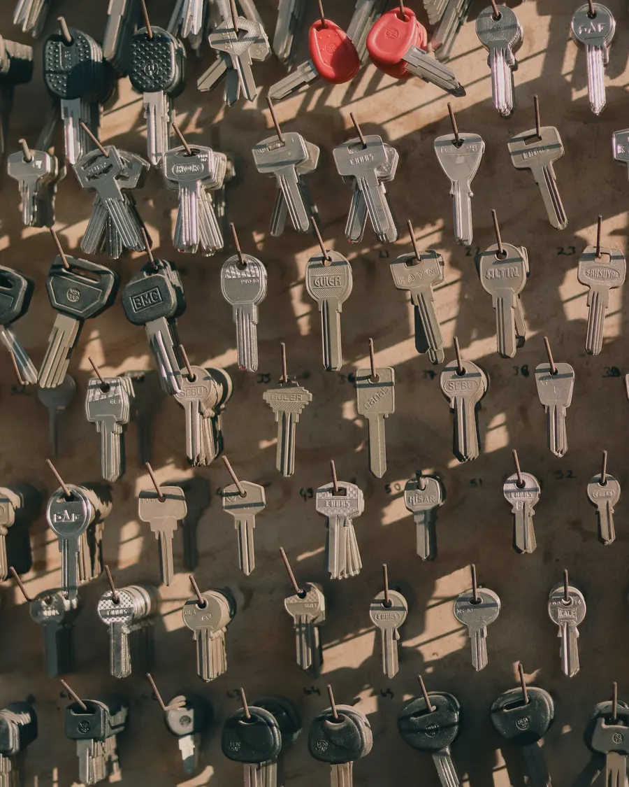
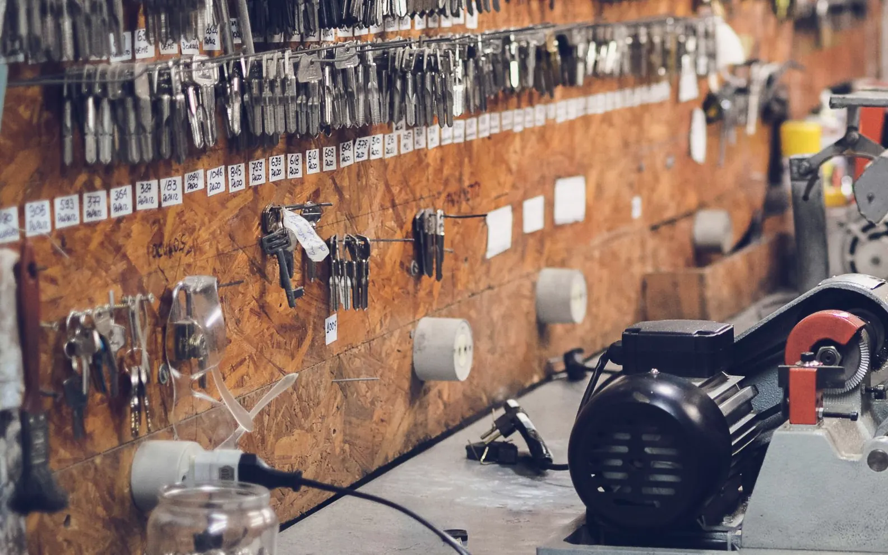
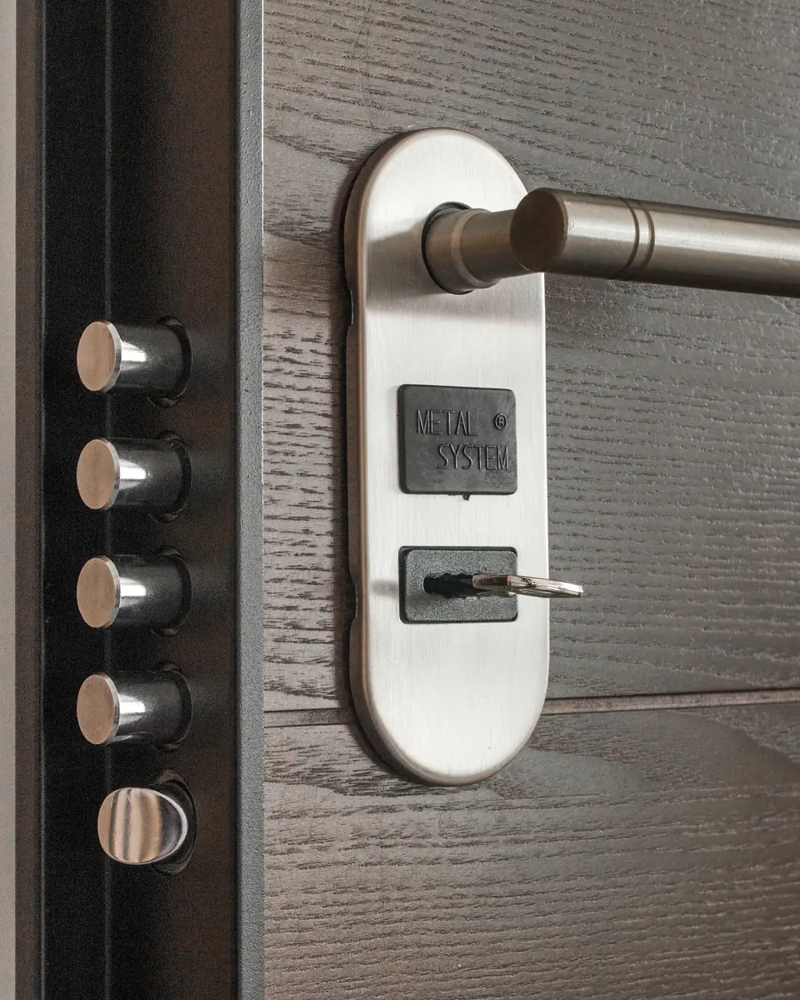
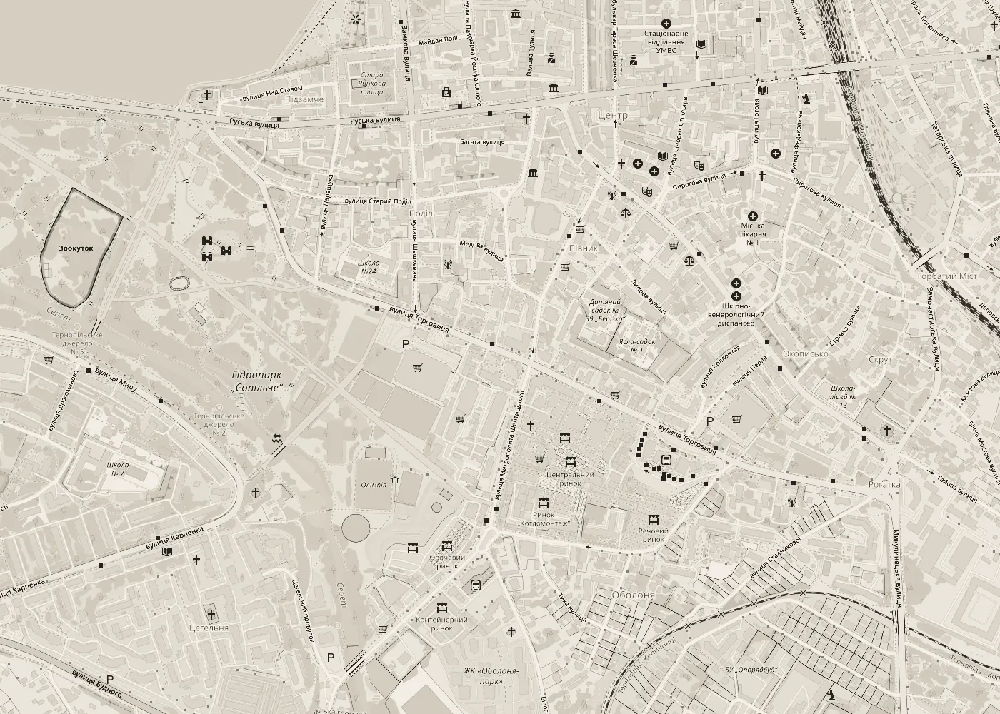

01
Виготовлення ключів
Робимо дублікат за вашим ключем. Принесіть ключ, з якого треба зробити копію, і скажіть, скільки примірників потрібно.
Написати про це
Тернопіль · ринок «Сфінкс»
Виготовлення ключів, ремонт і заміна замків, аварійне відмикання. Вулиця Торговиця, 13, між ОККО та видавництвом «Збруч».
Послуги
Три речі, з якими до нас приходять. Якщо сумніваєтесь, чи це до нас, просто напишіть.

01
Робимо дублікат за вашим ключем. Принесіть ключ, з якого треба зробити копію, і скажіть, скільки примірників потрібно.
Написати про це02
Замок заїдає, ключ провертається туго або всі ключі загубились. Подивимось, що можна відремонтувати, а що краще замінити.
Написати про це03
Двері зачинились, а ключа немає під рукою. Напишіть нам або приходьте на Торговицю, 13: допоможемо відкрити замок і, якщо треба, замінимо його.
Написати про цеВідгуки
Оцінка картки «Сервіс ключів» у Google Maps, 16 відгуків. Станом на жовтень 2026 року.
Відгуки в Google Maps
Перед візитом
Для дубліката потрібен ключ, з якого робимо копію. Якщо ключів кілька, візьміть усі, які треба скопіювати.
Для ремонту чи заміни сфотографуйте замок з обох боків і торцеву планку на дверях. Так легше підібрати заміну.
Не впевнені, чи можна зробити саме ваш ключ? Напишіть на ternokeys@gmail.com і додайте фото.
Як знайти

Сервіс ключів © OpenStreetMapАдреса
вулиця Торговиця, 13
Тернопіль, 46000
Орієнтир
Ринок «Сфінкс», між ОККО та видавництвом «Збруч».
Контакти
Опишіть, що потрібно: дублікат, ремонт, заміна чи відмикання. Фото ключа або замка дуже допомагає.
вул. Торговиця, 13, Тернопіль
ринок «Сфінкс»